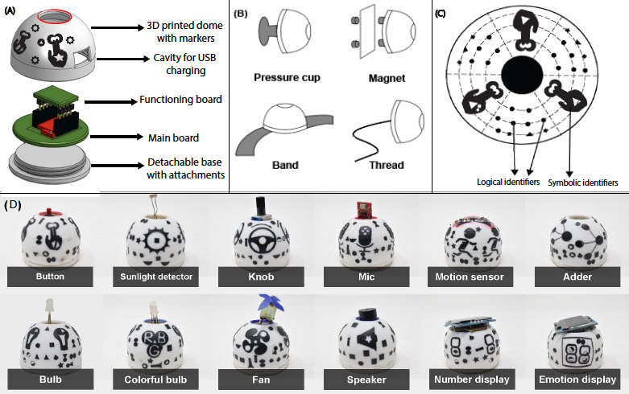

DIO is a novel digital-physical construction toolkit to enable constructionist learning for children from age group 8-12 years. The toolkit comprises of dome-shaped (D) tangible modules with various attachments that allow suspension on the body of multiple children and/or in the environment to support a variety of sensing/input (I), actuation/output (O) functionalities. The modules are enabled for wireless communication and can be linked together using an Augmented Reality based programming interface running on a smartphone. The smartphone recognizes our hemispherical modules omnidirectionally through novel computer vision based 3D patterns; custom made to provide logical as well as semantic encoding. In this paper, we show how, owing to its unique form-factor, the toolkit enables multi-user constructions for the children and offers a shared learning experience. We further reflect on our learning from a one-year long iterative design process and contribute a social scaffolding based procedure to engage children with such constructionist toolkits effectively.
